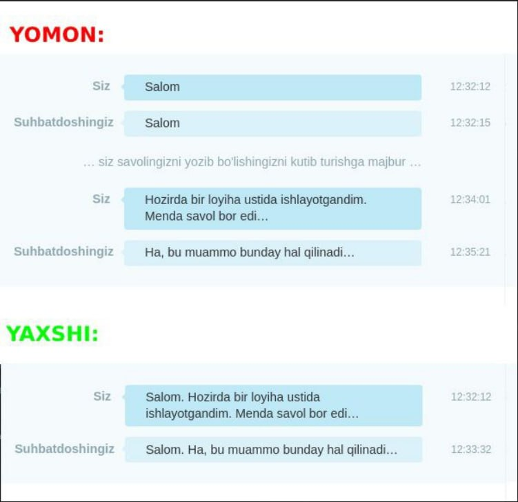

Iltimos, chatda meta savollar bermang!
Bu huddi kimgadir telefon qilib "Salom!" deb keyin uni kutish rejimiga 😐 o'tkazib qo'ygandek holatga o'xshaydi.
Undan ko'ra mana bu usul qulayroq:
E'tibor bergan bo'lsangiz, siz savolingizga tezda javob olishdan tashqari suhbatdoshingizni kuttirib ham qo'ymaysiz, chunki u xabarni o'qiboq savolni javobini izlashga tushadi.
Odamlar odatda yuzma-yuz ko'rishganda muammo haqida gapirishdan avval xushmuomala bo'lishga, hol-ahvol so'rashga odatlanishgan. Lekin chatlar - bu umuman boshqa holat. Odamlar yozishga gapirishdan ko'ra ko'proq vaqt sarflashadi. Siz unga xushmuomalalik bilan murojaat qilishni maqsad qilganingiz bilan, aslida ularning vaqtini olasiz va ish samaradorligini pasayishiga sababchi bo'lasiz.
Bundan tashqari yuqoridagi holatlar: "Assalomu alaykumlar!", "Salom. Shu yerdamisiz?", "Salom! Savol bor edi", "Aka vaqtingiz bormidi?", "Alo yordamingiz kerak edi" kabi jumlalarga ham taaluqli. Shunchaki ushbu xabarlarga qo'shib, savolingizni ham yuboring, bo'ldi!
Agar siz shunchaki "Salom" deyishni va darhol savol berishni ma'qul deb hisoblasangiz, bunday uslubdan foydalanishingiz mumkin:
Bundan tashqari, siz darhol savol berganda, asinxron 🔛 aloqa uchun imkoniyat ochiladi. Agar boshqa odam topilmasa va siz u qaytib kelguncha ketayotgan bo'lsangiz, u sizning "Salom" ga qarash va nima bo'lganiga hayron bo'lish o'rniga, savolingizni o'qib javob berishi mumkin.
Chatda faqat "salom" deb yozmang!
Tasavvur qiling: oddiy telefon SMS'larida birovga "Salom!" deb yozib qo'yyapsiz-da, band kishiga asli savolingizni bermasdan uni kuttirib qo'yyapsiz…
Chatdagi vaqtlarga e'tibor bering. Abdurahmon savoliga javobni bir necha daqiqa erta olishi mumkin edi va shu bilan birga, Abdullohni ham kuttirib qo'ymagan bo'lardi. Abdulloh asli savol berilishini kutmasdan berilgan savolga javobni o'ylab turgan bo'lardi!
Bunday kishilar hurmatni saqlay degan ma'noda birdaniga savol berishga o'tib ketishdan oldin salomlashishadi. Xuddi shaxsan ko'rishganda yoki telefonda gaplashayotganda. Bu, albatta, to'g'ri ish!
Lekin davr o'zgaryapti, hozir 2024-yil va chatlarda bu urfdan qolgan. Ko'p kishilar og'zaki suhbatga qaraganda chatlarda ancha sekin yozishadi. Shu sabab hurmatda bo'laman deyishingizga qaramasdan savolingizni yozib chiqishga ketadigan vaqt sabab birovlarni kuttirib qo'yayotgan bo'lasiz.
Bu esa ish samaradorligini butkul yo'qotadi (birovlarga bu xatti-harakatingiz yoqmaydi ham).
Agar sizga "salom"dan keyin shartta savol berishga o'tib ketish biroz qo'poldek tuyilayotgan bo'lsa, bitta xabar ichiga istaganingizcha salomlashuv so'zlarini yozishingiz mumkin. Masalan:
Oddiy ko'rinishi mumkin, lekin savol berishdan oldin salomlashuvga alohida javobni kutish yaxshigina vaqtni olib qo'yadi. Suhbatdoshingiz hali telefonni ochib qaramagan bo'lsa-yu, siz esa faqatgina "salom" deb yozib qo'ygan bo'lsangiz, xabaringizni o'qigan suhbatdosh birgina "salom"ingizga tikilgan holda "Nima demoqchi bo'lgan bo'lsa?..", deb o'ylanib qoladi.

Bu amalga rioya qilsangiz, hamma vaqtini tejaydi!
Shunday ekan, kimdir bio/statusiga mana shu xabarimizga havola qoldirgan bo'lsa, u kishi faqat "salom" deb yozib qo'yishlarini xush ko'rmasligini bilib olsangiz bo'ladi.
Agar kimningdir statusida ushbu saytga ishorani ko'rsangiz, xulosa qilishingiz mumkinki odatda u inson shunchaki "salom" deb yozilgan, yoki yuqoridagi sanab o'tilgan holatlardagidek, odamni vaqtini oladigan xabarlar bilan boshlangan chatlarni e'tiborsiz qoldiradi.
Telegramda yuborish:
Ushbu sahifaga ishora: https://208.uz
Hammasi bitta rasmda: https://208.uz/img/bad-good.png